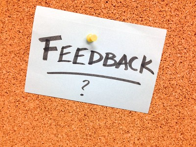

I am responding to your work in the order that it was submitted. I will mark your work Complete in Canvas as quickly as I can.
Because of the volume of work, I will rely strongly on rubrics rather than extensive comments. I will do my best to return all work by the last day of the course, May 3.
If you decide to complete it, the Optional Final is due Wednesday, May 10 at 11:59 PM. Here are the direct links to the relevant pages for this optional project:
I will calculate course grades by 12:01 AM on Friday, May 5, so you can decide whether to complete the optional final. The grade will be posted in the Effort Expectations-Based Course Grade assignment in Canvas.
If you have an issue that affects your ability to complete the course, you may qualify for Academic Relief.
Contact the relevant department for more information and to apply:
My department’s policy states, "Incompletes are for students who did their work during the semester but could not complete course requirements because of a problem or emergency at the end of the term."
As a result, I cannot offer Incompletes for anyone who fails to keep up during the term.
W
If you are not eligible for Academic Relief and have not completed the course or have not achieved the grade you set as your goal, consider withdrawing from the course. You have until the last day of classes (Wednesday, May 3) to apply. Note that your dean’s signature is required, so do not wait until the last minute.
What is the difference between withdrawing and resigning?
A student withdraws no later than the first day of the semester; no dean’s signature is required.
Beyond the first day, a student resigns, and a signature is required from their dean. The form for withdrawing and resigning is the same.
What is a course withdrawal?
Course Withdrawal (“W” grade) is a policy whereby you can withdraw from three courses (regardless of the number of credit hours) during your academic career at Virginia Tech. Course Withdrawal is not available until after the normal six-week drop deadline date for a semester. The deadline for using course withdrawal is the last day of classes prior to reading day, and you must meet with your advisor to initiate a course withdrawal. Courses for which you have applied a course withdrawal remain on your transcript with a “W” grade.